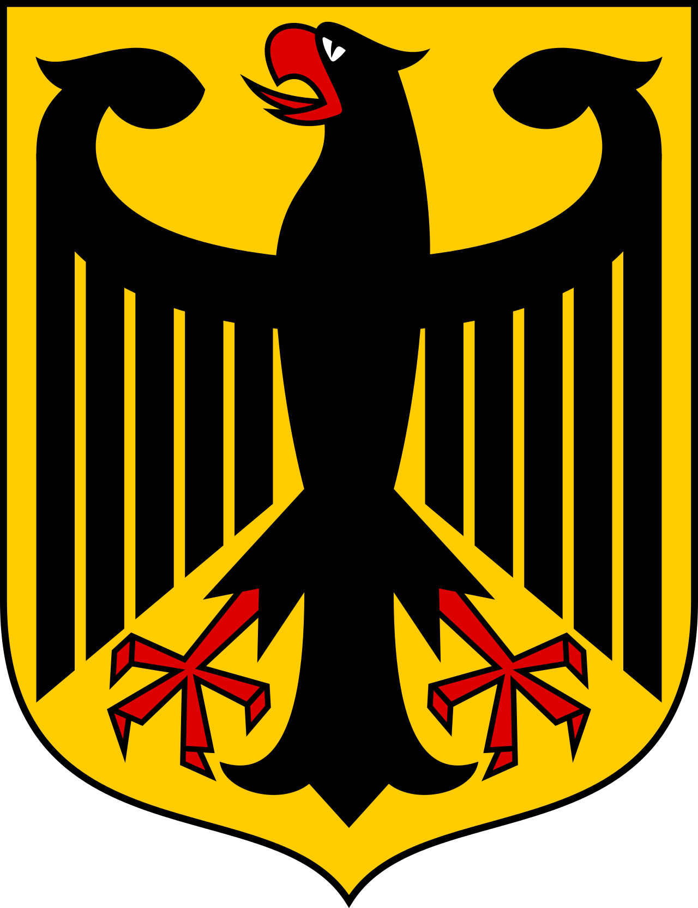

Symbole narodowe
Niemiecka flaga jest złożona z trzech pasów: czarnego u góry, czerwonego w środku i złotego u dołu. Została ona po raz pierwszy użyta w roku 1848, kiedy rozbite niemieckie państwa dążyły do zjednoczenia. Jej kolory zaczerpnięto z mundurów żołnierzy, którzy walczyli w okresie wojen Napoleońskich. Kiedy doszło do unifikacji, kolorami narodowymi stały się jednak czarny, czerwony i biały. W 1919 r., podczas tworzenia republiki, ponownie przyjęto barwy z 1848 r. W latach 30. XX wieku flagą państwową stała się flaga partii nazistowskiej, a po II wojnie światowej w obu nowych państwach niemieckich przyjęto flagę sprzed okresu nazizmu, lecz w Niemczech Wschodnich dodano do niej godło kraju. W wyniku kolejnego zjednoczenia Niemiec ponownie uznano flagę dawnych Niemiec Zachodnich.

Godłem Niemiec jest czarny orzeł z czerwonym dziobem i pazurami na złotym tle. W starożytności orzeł był symbolem rzymskich cesarzy. W średniowieczu Karol Wielki przejął od nich symbol swojej władzy. Po podziale imperium Karola symbolem Świętego Cesarstwa Rzymskiego stał się dwugłowy orzeł na złotym tle. Mimo zniesienia cesarstwa w 1804 r., orzeł przetrwał jako herb monarchii austriackiej. Z tego też powodu nie mógł on zostać przywrócony po zjednoczeniu Niemiec i powstaniu Cesarstwa Rzymskiego, więc jako godło przyjęto orła jednogłowego. Był on także symbolem Republiki Weimarskiej oraz Republiki Federalnej Niemiec od 1948 r.

Autorem tekstu niemieckiego hymnu jest August Heinrich Hoffmann von Fallersleben, muzykę zapożyczono z hymnu Cesarstwa Austriackiego, skomponowanego przez Josepha Haydna. Tekst został napisany 26 sierpnia 1841 r. i wzywa do zjednoczenia państwa. 11 sierpnia 1922 utwór stał się hymnem Republiki Weimarskiej. W okresie nazizmu tekst jego pierwszej strofy został wykorzystany przez propagandę w celu uprawomocnienia działań zbrojnych, prowadzonych wtedy przez Trzecią Rzeszę. Po II wojnie światowej nieoficjalnym hymnem Niemiec stała się trzecia zwrotka pieśni von Fallerslebena, co zatwierdzone zostało w 1991 r.